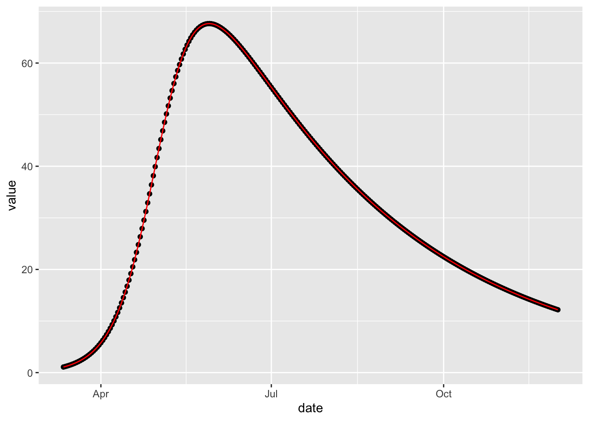
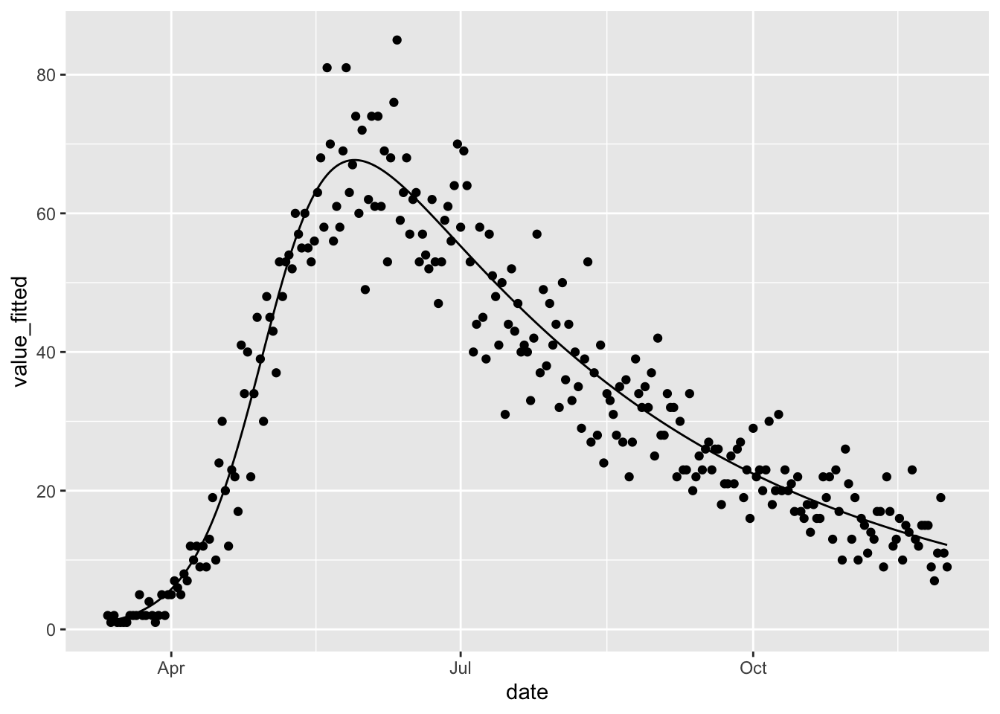

5 Calibration
Sometimes it is possible to obtain observed time-series data from an epidemic that one is modelling. It is natural to want to use such data to refine parameter values. This process of refinement is called calibration.
To illustrate McMasterPandemic calibration functionality, we are going to calibrate to a synthetic dataset generated by the model we are calibrating. In the last chapter we showed how to simulate from a simple SIR model. Here we simulate from this model and then manipulate the resulting data into a form that could be used for calibration. Although this functionality can be used to fit any number of model parameters to any number of observed time-series, here we generate a single time-series of the numbers of infected individuals.
synthetic_data = (sir
%>% simulation_history(include_initial_date = FALSE)
%>% select(Date, I)
%>% pivot_longer(-Date, names_to = "var", values_to = "value")
%>% rename(date = Date)
)When fitting data to a model, a specific format must be used. In particular there must be exactly the following three columns.
date– date associated with each observationvar– name of the state variable to comparevalue– observed value to compare with the simulated state variable
In this particular case there is only a single state variable used, but this need not be the case.
We next update the model object so that it contains two new ingredients: (1) the observed time-series data and (2) information on what parameters to fit and how to fit them.
sir_to_calibrate = (sir
%>% update_observed(synthetic_data)
%>% update_opt_params(
log_beta ~ log_flat(0),
log_nb_disp_I ~ log_normal(0, 5)
)
)The observed time-series data are simply added via the update_observed function. The information of what parameters to fit gets passed to update_opt_params. This information is provided using two-sided formulas for each parameter to be optimized. The information on what parameter to optimize appears on the left-hand-side of the formula (i.e. to the left of the tilde). Here we optimize the transmission rate parameter, beta, because the numbers of infected individuals in our time-series will be most informative about this parameter. The prefix log_ is used to indicate that the parameter should get passed to the objective function on the log scale. This transformation is useful because it keeps the transmission rate positive. If no transformation is desired, then simply beta should appear on the left-hand-side. The following additional transformations are available: logit_, log10, cloglog_, inverse_.
The information on what prior distribution (or regularization function) to use, as well as initial values for the optimizer, are provided on the right-hand-side of the formula. Currently, the transformation (i.e. log_ in this case) must match the left-hand-side, although we plan to remove this restriction so that the scale on which the prior density is evaluated can be different from the scale on which the parameter is passed to the objective function. There are only two prior distributions available currently: flat and normal. The flat prior is an improper flat distribution, providing no regularization. The only hyperparameter to the flat prior is the initial value for the optimizer on the transformed scale. The normal prior is the normal distribution with two hyperparameters, mean and standard deviation. The mean is also taken as the starting value.
Note that there is another parameter that we need to describe that we did not include in our original definition of the model: nb_disp_I. This is the dispersion parameter of the negative binomial distribution used to model errors in the fit of the data to the simulated trajectories. We have used a log_normal prior here instead of a log_flat prior, because negative binomial dispersion parameters have a tendency to get very large in synthetic data cases like this where there is very little error – large dispersion parameters indicate consistency with Poisson error. This negative binomial parameter has been added automatically to the params element of the model when the observed data are added.
## beta gamma N nb_disp_I
## 1e-01 1e-02 1e+02 1e+00But note how the parameters in the original model did not contain this parameter.
## beta gamma N
## 1e-01 1e-02 1e+02The sir_to_calibrate object can be calibrated using one of the optimizers in R that have been wrapped for use with flexmodels. There are currently two options: nlminb_flexmodel and optim_flexmodel. The difference between the two is that the former uses second-derivative information whereas the latter does not; they both use first-derivative information.
The result of these optimization functions is another model object containing additional information.
## $par
## log_beta log_nb_disp_I
## -2.302585 9.365837
##
## $value
## [1] 677.25
##
## $counts
## function gradient
## 47 18
##
## $convergence
## [1] 0
##
## $message
## NULL
##
## $hessian
## [,1] [,2]
## [1,] 9.040137e+03 -8.911629e-06
## [2,] -2.095180e-05 4.134060e-01
##
## $maxgrad
## [1] 0.002784678
##
## $eratio
## [1] 4.573006e-05This element is the object returned by the wrapped optimizer (nlminb in this case) – it can provide useful information about how well the optimization worked. In this case we see convergence, but this need not be true. Refer to documentation for nlminb and optim for help on interpreting these outputs.
We can now look at the parameter vector, which has been updated to reflect the calibration.
## beta gamma N nb_disp_I
## 9.999997e-02 1.000000e-02 1.000000e+02 1.168238e+04
## attr(,"tv_param_indices")
## named integer(0)Fitted flexmodel objects have a fitted method that can be used to compare the fits with the observed values.
(sir_calibrated
%>% fitted
%>% ggplot()
+ geom_point(aes(date, value))
+ geom_line(aes(date, value_fitted), colour = 'red')
)
As expected, the fit is exact because the model that was fitted was also used to simulate the data. But this perfect is not very realistic. The next section, Calibrating with Observation Error, illustrates calibration to noisy data.
5.1 Calibrating with Observation Error
To illustrate fitting to data with observation error we simulate some noisy observations of numbers of individuals in the I compartment, using the simulation model we made in the Observation Error section.
set.seed(1L)
noisy_data = (sir_with_obs_err
%>% simulation_history(include_initial_date = FALSE, obs_error = TRUE)
%>% select(Date, I)
%>% pivot_longer(-Date, names_to = "var", values_to = "value")
%>% rename(date = Date)
)
ggplot(noisy_data) +
geom_point(aes(date, value))We can fit these data to a model following the approaches in the Calibration section.
sir_obs_err_to_calibrate = (sir_with_obs_err
%>% update_observed(
noisy_data,
loss_params = loss_params(sir_with_obs_err)
)
%>% update_opt_params(log_beta ~ log_normal(-1, 0.5)
,log_nb_disp_I ~ log_normal(10, 1)
)
)This process starts by updating the simulation model with observed data and specifying what parameters to optimize.
We may pass this model to the optimizer, and indeed do achieve convergence.
sir_obs_err_calibrated = calibrate_flexmodel(sir_obs_err_to_calibrate)
print(class(sir_obs_err_calibrated))## [1] "flexmodel_bbmle" "flexmodel_calibrated" "flexmodel"## $par
## log_beta log_nb_disp_I
## -2.300352 9.991748
##
## $value
## [1] 801.6395
##
## $counts
## function gradient
## 41 10
##
## $convergence
## [1] 0
##
## $message
## NULL
##
## $hessian
## [,1] [,2]
## [1,] 8.874538e+03 0.001175772
## [2,] 1.166795e-03 0.992192386
##
## $maxgrad
## [1] 3.803997e-06
##
## $eratio
## [1] 0.0001118022Not only do we achieve convergence but we also achieve a good fit, which is not surprising given that we are fitting the same model that was used to simulate the data.
(fitted(sir_obs_err_calibrated)
%>% ggplot
+ geom_line(aes(date, value_fitted))
+ geom_point(aes(date, value))
)
5.2 Loss Function Theory
Let \(l_{\psi_i}\left(x_i(\theta); y_i\right)\) be a loss function where \(x_i(\theta)\) is a simulated element of the history matrix, \(y_i\) is an associated observed data point, and \(\psi_i\) is a vector of loss function parameters. Note that we write the simulation values as functions of \(\theta\) to indicate their dependence on parameters. Every element \(i\) that belongs to the same column of the history matrix has the same value for \(\psi_i\), but to simplify notation \(\psi\) is sub-scripted by \(i\). Let \(r_{\phi_j}(\theta_j)\) be an optional regularization function for each parameter \(\theta_j\) being optimized, where \(\phi_j\) is a vector of regularization function parameters associated with parameter \(j\). The objective function is then given by the following.
\[ L_{\psi, \phi}(\theta; y) = \sum_i l_{\psi_i}\left(x_i(\theta); y_i\right) + \sum_j r_{\phi_j}(\theta_j) \] Currently the only objective function that is offered is the negative log negative binomial density, but the infrastructure we build assumes that other loss functions will be allowed in the future. Similarly the only regularizing function that is available is the negative log normal density.
Each parameter, \(\theta_j\), can be optionally passed into the objective function on a transformed scale. These transformations allow users to enforce limits on the domain of the parameter space (e.g. a logit transformation will keep parameter values between 0 and 1). The regularization functions are applied on the transformed scale, but the elements of the rate matrix (and therefore the simulations, \(x\)) are computed using the parameters on their original scale. Therefore, we have the following ordering of operations.
- Parameter, \(\theta_j\), is passed in to the objective function on the transformed scale, \(f(\theta_j)\)
- The regularization function, \(r_{\phi_j}(\theta_j)\), is computed and saved
- The inverse transformation is applied to the parameter, \(\theta_j\), and the result is used to overwrite the previous value in the
c++paramsvector - The simulations are made
- The objective function, \(L\), is computed, and this computation includes adding the saved values of the regularization functions
- The objective function, \(L\), is returned by the
c++functionobjective_function